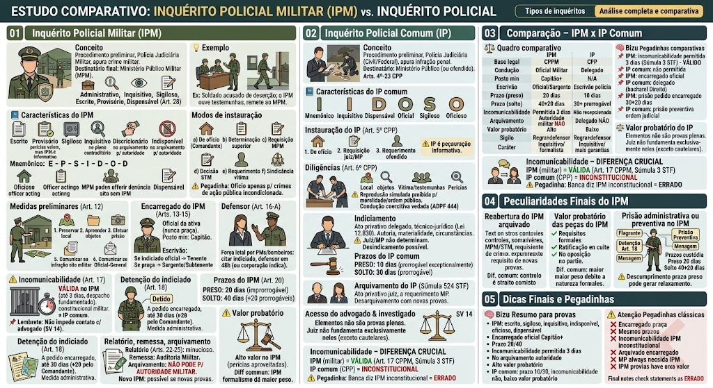

O que é o IPM? (Art. 9º)
O que é o IPM? (Art. 9º)
O Inquérito Policial Militar (IPM) é o procedimento investigatório preliminar, conduzido pela Polícia Judiciária Militar, que tem por finalidade apurar a existência de crime militar, identificar sua autoria e reunir elementos de informação para subsidiar a ação penal militar. Seu destinatário final é o Ministério Público Militar (MPM), que decidirá se oferece denúncia, promove o arquivamento ou requisita diligências complementares.
Natureza: é um procedimento administrativo, inquisitivo, sigiloso, escrito, provisório e dispensável (Art. 28).
Situação prática
Situação prática
Um soldado é acusado de deserção. A autoridade militar instaura o IPM para ouvir testemunhas, verificar a ausência, e apurar se a deserção ocorreu. O IPM será remetido ao MPM, que decidirá se denuncia o soldado ou arquiva o caso.
Características do IPM (campeãs de prova)
Características do IPM (campeãs de prova)
As principais características do IPM são:
- Escrito: toda a investigação deve ser documentada por escrito (Art. 9º, caput).
- Provisório: as provas colhidas (perícias, exames) já valem para o processo, mas o IPM em si é uma peça informativa.
- Sigiloso: pode ser sigiloso para terceiros, mas o advogado do indiciado tem acesso aos autos já documentados (SV 14).
- Inquisitivo: não há contraditório pleno nem ampla defesa, pois ainda não há acusação formal.
- Discricionário: a autoridade encarregada escolhe as diligências que entende necessárias.
- Indisponível: a autoridade policial militar não pode arquivar o IPM (Art. 24).
- Oficioso: pode ser instaurado de ofício pela autoridade militar.
- Dispensável: o MPM pode oferecer denúncia sem IPM, se houver provas suficientes (Art. 28).
🧠 Mnemônico: “E-P-S-I-D-O-D” (Escrito, Provisório, Sigiloso, Inquisitivo, Discricionário, Oficioso, Dispensável).
Modos de instauração (Art. 10) – CAI MUITO!
Modos de instauração (Art. 10) – CAI MUITO!
O IPM pode ser instaurado pelas seguintes formas (Art. 10):
a) De ofício pela autoridade militar (ex.: comandante que toma conhecimento de um crime).
b) Por determinação ou delegação da autoridade superior (ex.: superior que determina a instauração).
c) Por requisição do Ministério Público Militar (ex.: o MPM requisita a investigação).
d) Por decisão do Superior Tribunal Militar (STM).
e) A requerimento da parte ofendida (vítima ou seu representante).
f) Em decorrência de sindicância que revele indícios de crime militar.
⚠️ Pegadinha: A instauração de ofício é possível apenas nos crimes de ação pública incondicionada. Nos crimes que dependem de requisição (arts. 136 a 141 do CPM), o IPM só pode ser instaurado após a requisição.
Medidas preliminares (Art. 12) – OBRIGATÓRIAS
Medidas preliminares (Art. 12) – OBRIGATÓRIAS
Art. 12: 'Ao tomar conhecimento de uma infração penal militar, a autoridade deverá, de imediato:'
1. Dirigir-se ao local do fato, preservando o estado das coisas;
2. Apreender instrumentos e objetos relacionados ao crime;
3. Efetuar a prisão do infrator (se for o caso);
4. Colher provas que sirvam ao esclarecimento;
5. Se a infração não for militar (evidentemente), comunicar à autoridade policial competente e apresentar o infrator;
6. Se o infrator for Oficial-General, comunicar ao Ministro da Defesa e ao Chefe de Estado-Maior.
⚠️ Pegadinha: A autoridade deve, ao tomar conhecimento, realizar essas medidas imediatamente – não pode postergar.
Encarregado do IPM (Arts. 13 a 15)
Encarregado do IPM (Arts. 13 a 15)
O IPM é presidido por um oficial da ativa, chamado de encarregado (Art. 15).
Posto mínimo: deve ser Capitão ou Capitão-Tenente (oficial). Em crimes contra a segurança nacional, deve ser oficial superior (Major, Tenente-Coronel ou Coronel).
Atribuições (Art. 13):
- Ouvir o ofendido, indiciado e testemunhas;
- Promover reconhecimentos, acareações, exames, perícias, buscas e apreensões;
- Proteger testemunhas;
- Proceder à reprodução simulada dos fatos (desde que não ofenda a moralidade ou a hierarquia);
- Solicitar ao Procurador-Geral a assistência de procurador para casos complexos (Art. 14).
Escrivão (Art. 11): designado pelo encarregado:
- Se o indiciado for oficial: escrivão será Segundo ou Primeiro-Tenente;
- Se o indiciado for praça: escrivão será Sargento, Subtenente ou Suboficial.
⚠️ Pegadinha: O encarregado sempre é oficial (nunca praça).
Defensor (Art. 16-A – NOVO!)
Defensor (Art. 16-A – NOVO!)
Art. 16-A: 'Em investigações sobre uso da força letal por policiais militares ou bombeiros militares, o indiciado deve ser citado e pode constituir defensor em até 48 horas. Se não o fizer, a autoridade deve intimar a corporação para indicar defensor.'
Garantia extra: assegura ao militar envolvido em uso de força letal o direito à defesa técnica desde o início da investigação.
Incomunicabilidade (Art. 17) – VÁLIDA no IPM!
Incomunicabilidade (Art. 17) – VÁLIDA no IPM!
Art. 17: 'O encarregado pode manter o preso incomunicável por até 3 dias, mediante despacho fundamentado.'
Diferente do processo comum: no IPM, a incomunicabilidade é permitida por 3 dias (Súmula 3 do STF reconhece a constitucionalidade desse dispositivo no âmbito militar).
⚠️ Pegadinha: No processo penal comum, a incomunicabilidade não foi recepcionada (CF/88). Mas no processo penal militar, o Art. 17 do CPPM permanece válido (Súmula 3 STF).
📌 Lembrete: a incomunicabilidade não impede o contato com o advogado (SV 14) – apenas restringe contato com outras pessoas.
Detenção do indiciado (Art. 18)
Detenção do indiciado (Art. 18)
Art. 18: 'A pedido do encarregado, o indiciado pode ser detido, independentemente de flagrante, por até 30 dias.'
Prorrogação: +20 dias pelo Comandante da Região, Distrito Naval ou Zona Aérea.
Alternativas: o encarregado pode solicitar ao juiz a prisão preventiva ou a menagem.
⚠️ Pegadinha: A detenção a pedido do encarregado não é prisão preventiva – é uma medida administrativa, com prazo fixo (30 + 20).
Inquirição (Art. 19)
Inquirição (Art. 19)
Art. 19: 'Testemunhas e indiciado devem ser ouvidos entre 7h e 18h (exceto em urgência). Cada testemunha: máximo 4h consecutivas, com descanso de 30 min se ultrapassar. Depoimento não concluído até as 18h é encerrado e retomado no dia seguinte.'
Regra: o depoimento não pode ultrapassar o horário limite, sob pena de nulidade.
Prazos do IPM (Art. 20) – DECORE!
Prazos do IPM (Art. 20) – DECORE!
Art. 20: os prazos para conclusão do IPM são:
- Preso: 20 dias (contados da execução da ordem de prisão);
- Solto: 40 dias (contados da instauração);
- Prorrogação (solto): +20 dias pela autoridade superior, se houver exames/perícias em andamento ou diligências indispensáveis;
- Prorrogação além disso: só por dificuldade insuperável, a juízo do Ministro de Estado competente.
⚠️ Pegadinha: O prazo para preso é improrrogável – se não concluído, o preso deve ser solto (salvo se já houver denúncia).
Relatório, remessa e arquivamento (Arts. 22-25)
Relatório, remessa e arquivamento (Arts. 22-25)
Relatório (Art. 22): minucioso, com diligências, ouvidos, resultados, e conclusão sobre indícios e eventual prisão preventiva.
Remessa (Art. 23): ao Auditor da Circunscrição onde ocorreu o crime. Se for fora do país, à 11ª Circunscrição (Brasília).
Arquivamento (Art. 24): a autoridade militar NÃO PODE arquivar o IPM, mesmo que conclua pela inexistência de crime. Deve remeter ao juiz e ao MPM.
Novo IPM (Art. 25): se novas provas surgirem, pode ser instaurado outro, desde que não haja caso julgado ou extinção da punibilidade.
Devolução (Art. 26): os autos não podem ser devolvidos à autoridade policial, salvo por requisição do MPM para diligências.
Auto de flagrante suficiente (Art. 27): se o auto de prisão em flagrante já tiver todos os elementos, pode dispensar o IPM. Exceto se o crime deixar vestígios e depender de perícia.
Reabertura do IPM arquivado
Reabertura do IPM arquivado
No processo penal militar, a reabertura do IPM arquivado é possível, mas com regras mais rígidas:
- Requisito: surgimento de novas provas ou informações relevantes (Art. 25 do CPPM);
- Controle: o MPM e o STM têm papel fiscalizador mais rigoroso, especialmente em crimes contra a segurança nacional;
- Não faz coisa julgada material: o arquivamento não impede nova investigação, mas exige justificativa robusta.
Diferença para o IP comum: no IP comum, o arquivamento também não faz coisa julgada (Súmula 524 STF), mas o controle é menos rigoroso, e a reabertura pode ser feita com mais facilidade.
Valor probatório das peças do IPM
Valor probatório das peças do IPM
As perícias, exames e avaliações realizados no IPM têm alto valor probatório no processo penal militar, desde que:
- Observadas as formalidades legais (ex.: laudo pericial com dois peritos, contraditório mitigado);
- As peças sejam ratificadas em juízo ou submetidas a contraditório no processo;
- Não haja manifestação contrária de uma das partes.
Diferença para o IP comum: no processo comum, o art. 155 do CPP proíbe o juiz de fundamentar sua decisão exclusivamente nos elementos do inquérito. No processo militar, o formalismo e a natureza inquisitiva conferem maior peso a esses elementos, podendo dispensar a repetição de perícias complexas em juízo.
O que é o Inquérito Policial (IP)?
O que é o Inquérito Policial (IP)?
O Inquérito Policial (IP) é um procedimento administrativo investigatório, conduzido pela polícia judiciária (Polícia Civil ou Federal), que tem como finalidade apurar a existência de infração penal e identificar sua autoria, reunindo elementos de informação para subsidiar a ação penal.
Objetivo: subsidiar o Ministério Público (ou o ofendido, nos crimes privados) na decisão de oferecer denúncia/queixa ou arquivar.
📌 Base legal: Arts. 4º a 23 do CPP.
Características do IP comum – MNEMÔNICO IDOSO
Características do IP comum – MNEMÔNICO IDOSO
O IP comum tem as seguintes características, resumidas pelo mnemônico IDOSO:
- Inquisitivo – não há contraditório pleno, mas há garantias mínimas (direito ao silêncio, assistência de advogado).
- Dispensável – o MP pode denunciar sem IP, se tiver provas suficientes.
- Oficial – conduzido por órgão oficial do Estado (Delegado de Polícia).
- Sigiloso – para terceiros, mas o advogado tem acesso (SV 14).
- Oficioso – a autoridade deve agir de ofício (ação pública incondicionada).
- Indisponível – o delegado não pode arquivar; só o juiz, a pedido do MP.
⚠️ Atenção: o IP é peça informativa – não é processo.
Instauração do IP (Art. 5º CPP)
Instauração do IP (Art. 5º CPP)
O IP pode ser instaurado pelas seguintes formas (Art. 5º):
1. De ofício – pela autoridade policial (crimes de ação pública incondicionada).
2. Por requisição – do juiz ou do Ministério Público.
3. A requerimento do ofendido – em crimes de ação pública condicionada à representação, ou em ação privada (com representação).
Auto de Prisão em Flagrante (APF): uma vez lavrado, o IP já está instaurado, sem necessidade de portaria.
Notitia Criminis: o conhecimento do crime pode ser:
- Direta/Espontânea (autoridade presencia);
- Indireta/Provocada (informação de terceiros);
- Coercitiva (flagrante);
- Inqualificada (denúncia anônima – deve ser verificada antes de instaurar).
Diligências (Art. 6º CPP)
Diligências (Art. 6º CPP)
Ao tomar conhecimento do crime, a autoridade policial deverá (Art. 6º):
- Ir ao local e preservá-lo;
- Apreender objetos;
- Ouvir vítima e testemunhas;
- Realizar reconhecimento e acareações;
- Determinar perícias;
- Investigar a vida pregressa do indiciado.
Diligência proibida: reprodução simulada dos fatos, se contrária à moralidade ou ordem pública.
⚠️ Condução coercitiva: vedada pelo STF (ADPF 444) – não pode ser usada para interrogatório.
Indiciamento (Lei 12.830/2013)
Indiciamento (Lei 12.830/2013)
O indiciamento é ato privativo do delegado de polícia (Lei 12.830/2013, Art. 2º, §6º), fundamentado em análise técnico-jurídica, com:
- Autoria (quem cometeu);
- Materialidade (provas da ocorrência);
- Circunstâncias (como ocorreu).
O que NÃO pode:
- Juiz não pode determinar indiciamento;
- MP não pode determinar indiciamento;
- Indiciamento não torna o investigado réu (a denúncia é que faz).
Desindicamento: possível por decisão judicial que revogue o ato.
Sujeito passivo: qualquer pessoa maior de idade, exceto magistrados e membros do MP (STF – Inq 2.411) – nesses casos, os autos devem ser encaminhados à autoridade competente.
Prazos do IP comum
Prazos do IP comum
Os prazos para conclusão do IP são (Art. 10, CPP):
- Indiciado preso: 10 dias (prorrogável apenas em situações excepcionais);
- Indiciado solto: 30 dias (prorrogável).
Observações:
- O prazo começa com a instauração do IP;
- O descumprimento do prazo não gera nulidade do processo (IP é peça informativa);
- A extrapolação pode gerar relaxamento da prisão (se ilegal por excesso de prazo).
Leis especiais: podem prever prazos diferentes (ex.: Lei de Drogas – 15/30 dias).
Arquivamento do IP (Súmula 524 STF)
Arquivamento do IP (Súmula 524 STF)
O arquivamento do IP é ato privativo do juiz, a requerimento do MP (o delegado não pode arquivar).
Hipóteses:
- Falta de provas;
- Inexistência do crime;
- Excludentes de ilicitude/culpabilidade;
- Prescrição;
- ANPP (acordo de não persecução penal).
Desarquivamento: pode ocorrer quando surgirem novas provas (Súmula 524 STF) – o arquivamento não gera coisa julgada material definitiva.
Vícios no IP: irregularidades no IP não anulam o processo penal (pois o IP é dispensável).
Acesso do advogado e direitos do investigado
Acesso do advogado e direitos do investigado
Súmula Vinculante 14 do STF: o advogado tem acesso aos autos e às provas já documentadas, mas não a diligências em andamento.
Direitos do investigado:
- Direito ao silêncio;
- Assistência de advogado;
- Respeito à dignidade;
- Não ser submetido a condução coercitiva (ADPF 444).
Valor probatório do IP comum (Art. 155 CPP)
Valor probatório do IP comum (Art. 155 CPP)
Art. 155: 'Os elementos informativos colhidos no inquérito não são provas chanceladas pelo contraditório e ampla defesa, possuindo desvalor legal preestabelecido. Isoladamente, nunca devem legitimar a fundamentação de uma sentença.'
Regra: o juiz não pode fundamentar sua decisão exclusivamente nos elementos do IP – deve basear-se nas provas produzidas em juízo, com contraditório.
Exceção: provas cautelares não repetíveis (ex.: perícia de local) podem ser valoradas, desde que observado o contraditório diferido.
Pegadinhas comparativas
Pegadinhas comparativas
📌 IPM: incomunicabilidade permitida por 3 dias (Súmula 3 STF) – VÁLIDO.
📌 IP comum: incomunicabilidade NÃO é permitida (CF/88).
📌 IPM: encarregado deve ser oficial (nunca praça).
📌 IP comum: delegado pode ser civil (não precisa ser bacharel em Direito? Sim, pode, mas a Lei 12.830/2013 exige bacharel em Direito para delegado).
📌 IPM: prisão do indiciado a pedido do encarregado – até 30+20 dias.
📌 IP comum: prisão preventiva só por ordem judicial.
Incomunicabilidade – DIFERENÇA CRUCIAL (CAI MUITO!)
Incomunicabilidade – DIFERENÇA CRUCIAL (CAI MUITO!)
📌 IPM (militar): a incomunicabilidade é VÁLIDA por até 3 dias (Art. 17 do CPPM, Súmula 3 STF).
📌 IP comum (CPP): a incomunicabilidade é INCONSTITUCIONAL (não foi recepcionada pela CF/88).
⚠️ Pegadinha: A banca pode afirmar que a incomunicabilidade no IPM é inconstitucional – ERRADO. É válida no processo penal militar.
📌 Regra geral: no processo penal militar, a incomunicabilidade existe; no processo penal comum, não.
Reabertura do IPM arquivado
No processo penal militar, a reabertura do IPM arquivado é possível, mas com regras mais rígidas:
- Requisito: surgimento de novas provas ou informações relevantes (Art. 25 do CPPM);
- Controle: o MPM e o STM têm papel fiscalizador mais rigoroso, especialmente em crimes contra a segurança nacional;
- Não faz coisa julgada material: o arquivamento não impede nova investigação, mas exige justificativa robusta e controle mais apertado.
Diferença: no IP comum, o arquivamento também não faz coisa julgada (Súmula 524 STF), mas o controle é menos rigoroso, e a reabertura pode ser feita com mais facilidade.
Valor probatório das peças do IPM no processo
Valor probatório das peças do IPM no processo
As perícias, exames e avaliações realizados no IPM têm alto valor probatório no processo penal militar, desde que:
- Observadas as formalidades legais (ex.: laudo pericial com dois peritos, contraditório mitigado);
- As peças sejam ratificadas em juízo ou submetidas a contraditório no processo;
- Não haja manifestação contrária de uma das partes.
Diferença para o IP comum: no processo comum, o art. 155 do CPP proíbe o juiz de fundamentar sua decisão exclusivamente nos elementos do inquérito. No processo militar, o formalismo e a natureza inquisitiva conferem maior peso a esses elementos, podendo dispensar a repetição de perícias complexas em juízo.
Prisão administrativa ou preventiva durante o IPM
Prisão administrativa ou preventiva durante o IPM
Durante o IPM, o indiciado pode ser submetido a:
- Prisão em flagrante (Art. 243 e seguintes do CPPM);
- Detenção a pedido do encarregado (Art. 18 – até 30 dias, prorrogável por mais 20);
- Prisão preventiva (decretada pelo juiz, a requerimento do encarregado ou do MPM);
- Menagem (substitutiva da preventiva, quando cabível).
Prazos de custódia:
- IPM com indiciado preso: 20 dias (improrrogável – os autos devem ser remetidos ao juiz para decisão);
- IPM com indiciado solto: 40 dias (prorrogável por mais 20).
⚠️ Atenção: o descumprimento do prazo para preso pode gerar relaxamento da prisão, salvo se a denúncia já tiver sido oferecida ou se houver prisão preventiva fundamentada.
Resumo para provas
Resumo para provas
📌 IPM: escrito, sigiloso, inquisitivo, indisponível, oficioso, dispensável.
📌 Encarregado: oficial, Capitão ou superior. Escrivão: oficial (se indiciado oficial) ou Sargento/Subtenente (se praça).
📌 Prazo IPM: 20 dias (preso) / 40 dias (solto, +20 prorrogáveis).
📌 Incomunicabilidade: permitida no IPM (3 dias – Art. 17, CPPM) – válida (Súmula 3 STF).
📌 IPM não pode ser arquivado pela autoridade militar (Art. 24) – só o juiz/MP.
📌 Valor probatório do IPM: alto (perícias aproveitadas no processo).
📌 IP comum: prazo 10/30 dias, incomunicabilidade não recepcionada, valor probatório baixo (art. 155 CPP).
Pegadinhas clássicas
Pegadinhas clássicas
❌ 'O encarregado do IPM pode ser praça.' → ERRADO (deve ser oficial).
❌ 'O IPM tem o mesmo prazo do IP comum.' → ERRADO (20/40 dias vs 10/30 dias).
❌ 'A incomunicabilidade no IPM é inconstitucional.' → ERRADO (é válida – Súmula 3 STF).
❌ 'O IPM pode ser arquivado pelo encarregado.' → ERRADO (não pode – Art. 24).
❌ 'O IPM é dispensável, mas o MP sempre precisa dele para denunciar.' → ERRADO (dispensável – Art. 28).
❌ 'As provas do IPM não têm valor no processo militar.' → ERRADO (têm alto valor probatório).
Mapa-mental – IPM x IP comum
Material de estudo: Tipos de inqueritos
Material complementar · Ver fonte no GitHub
Comparação – IPM x IP Comum
Quadro comparativo
| Critério | IPM (Militar) | IP Comum (CPP) |
|---|---|---|
| Base legal | Arts. 9º a 27 do CPPM | Arts. 4º a 23 do CPP |
| Condução | Oficial militar (encarregado) | Delegado de Polícia Civil/Federal |
| Posto mínimo do encarregado | Capitão ou Capitão-Tenente | N/A (delegado de carreira) |
| Escrivão | Oficial ou Sargento (conforme indiciado) | Escrivão de polícia |
| Prazo (preso) | 20 dias (improrrogável) | 10 dias (prorrogável excepcionalmente) |
| Prazo (solto) | 40 dias (+20 prorrogáveis) | 30 dias (prorrogável) |
| Incomunicabilidade | Permitida por 3 dias (Art. 17) | Não recepcionada (CF/88) |
| Arquivamento | Não pode pela autoridade militar (Art. 24) | Não pode pelo delegado (Art. 17 CPP) |
| Reabertura | Possível com novas provas (Art. 25) | Possível com novas provas (Súmula 524 STF) |
| Valor probatório | Alto (perícias aproveitadas no processo) | Baixo (mera informação – art. 155 CPP) |
| Sigilo | Regra, com acesso do defensor (SV 14) | Regra, com acesso do defensor (SV 14) |
| Caráter | Inquisitivo e formalista | Inquisitivo, mas com mais garantias |
Dicas Finais e Pegadinhas
Mapa-mental – IPM x IP comum
